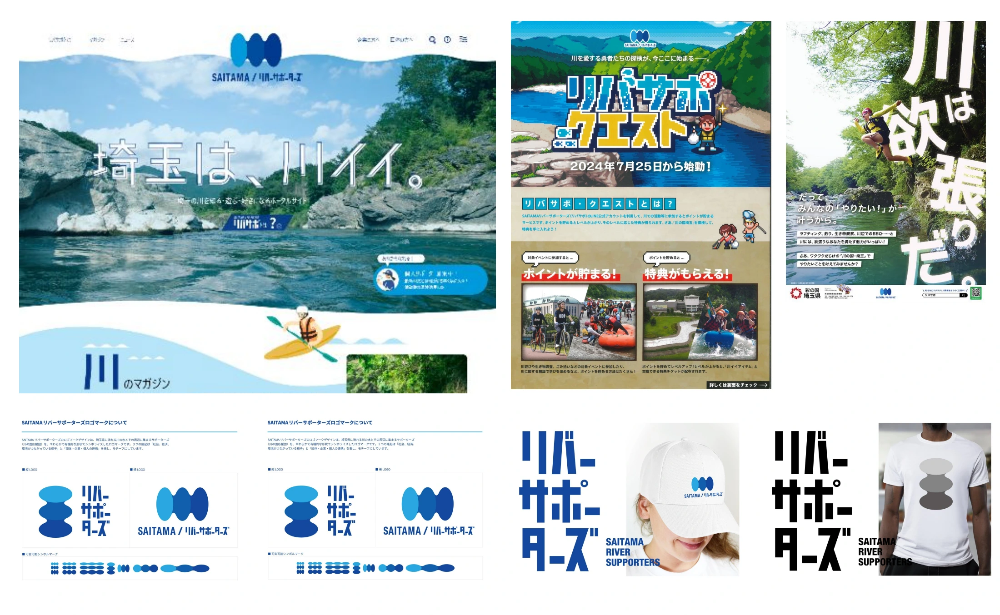

環境 / 埼玉
SAITAMA リバーサポーターズ


埼玉県の川・地域メディア「SAITAMA リバーサポーターズ」。川と地域の関わりを伝える取り組みです。
01 / 背景とテーマ
輪郭を与える
川はいつもそこにあるのに、暮らしの中では意識されにくい存在です。埼玉県は川の面積割合が日本一。その事実を「守るべきもの」ではなく「関わると面白いもの」として捉え直し、県民と企業が参加できる入口をつくりました。
02 / SCHEMAの担当範囲
全体を整える
SCHEMAは企画・設計からサイト運営、SNS・LINEの運用、取材と編集、映像、イベントブース、販促物までを一貫して担当。約6年にわたって継続し、サポーターに加わる企業・団体を増やすことを軸に運営しています。
03 / 取り組みの視点
枠組みをひらく
参加企業との共同企画にも踏み込んでいます。川の注意看板をTシャツに仕立てた「このへんはこわいぞ」企画や、QRで現地をめぐるリバサポクエストなど、環境というテーマを商品や遊びの形にひらき、人が自分から近づく理由をつくっています。